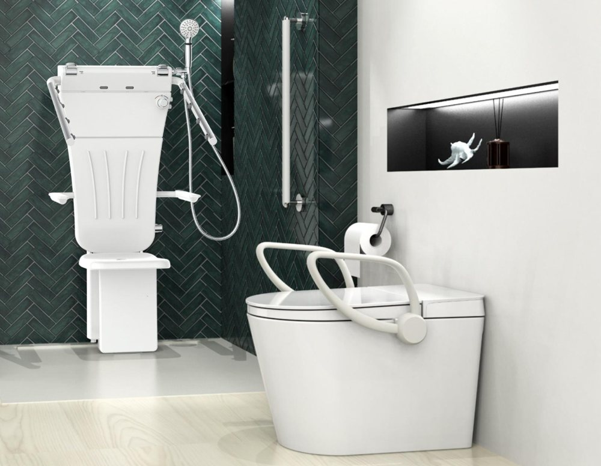
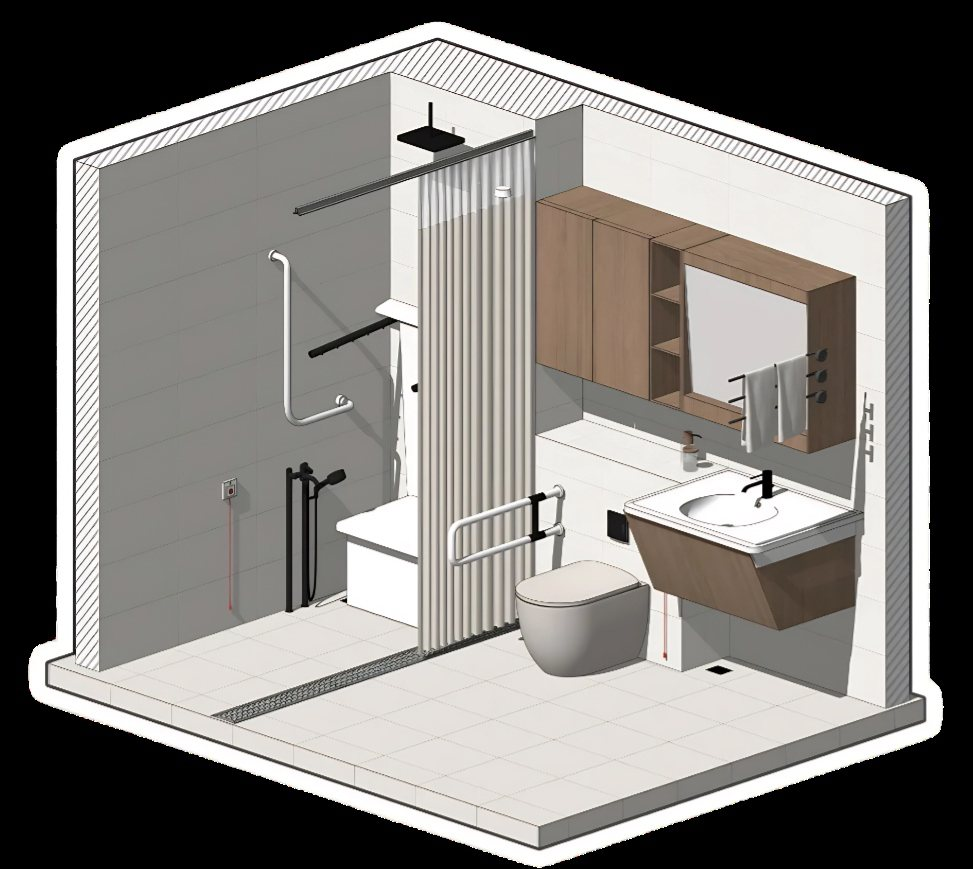
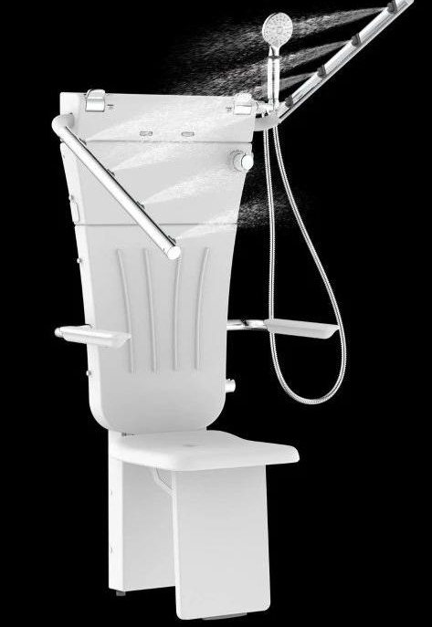
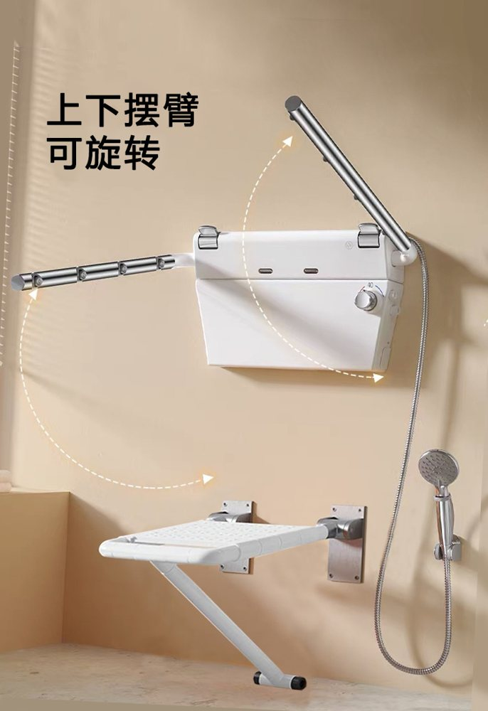
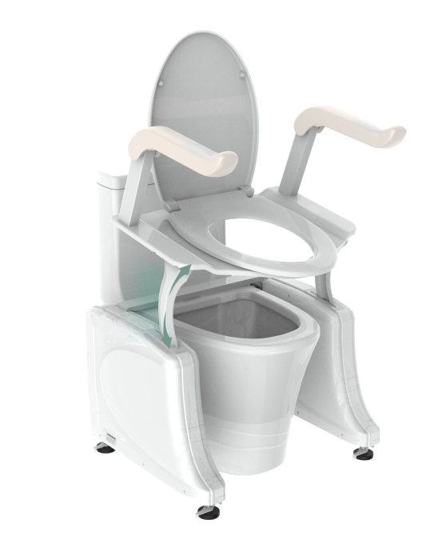
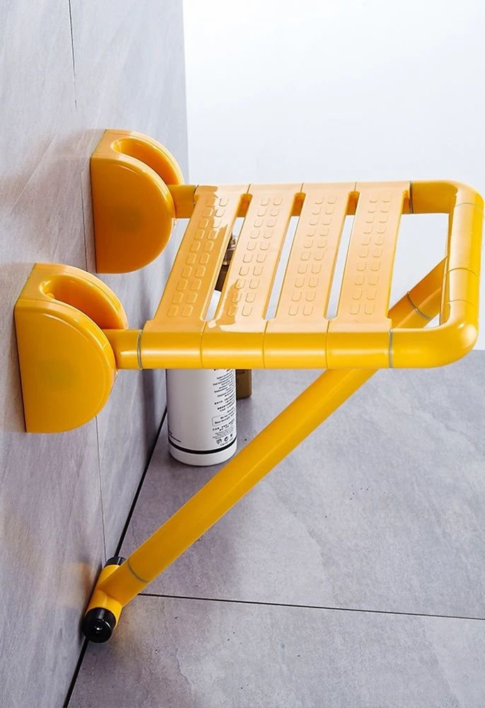
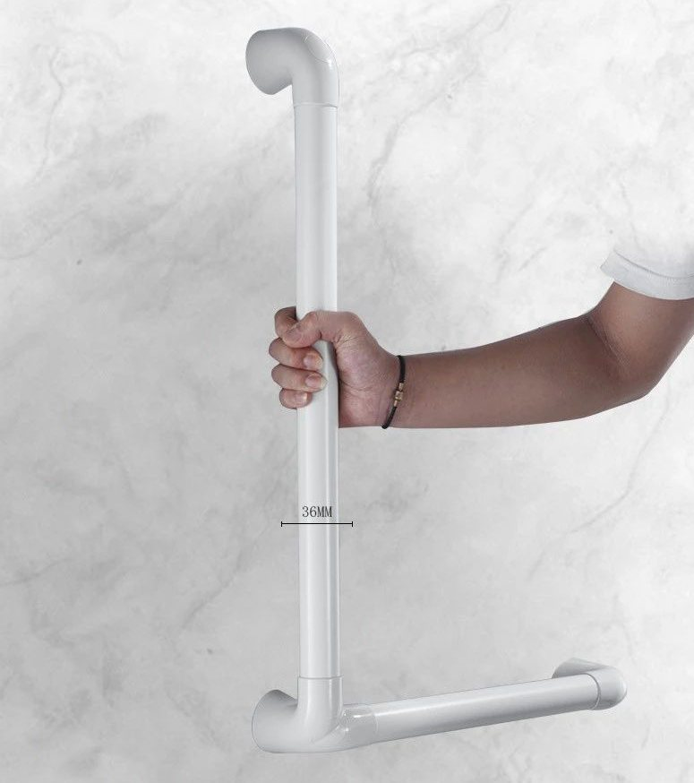
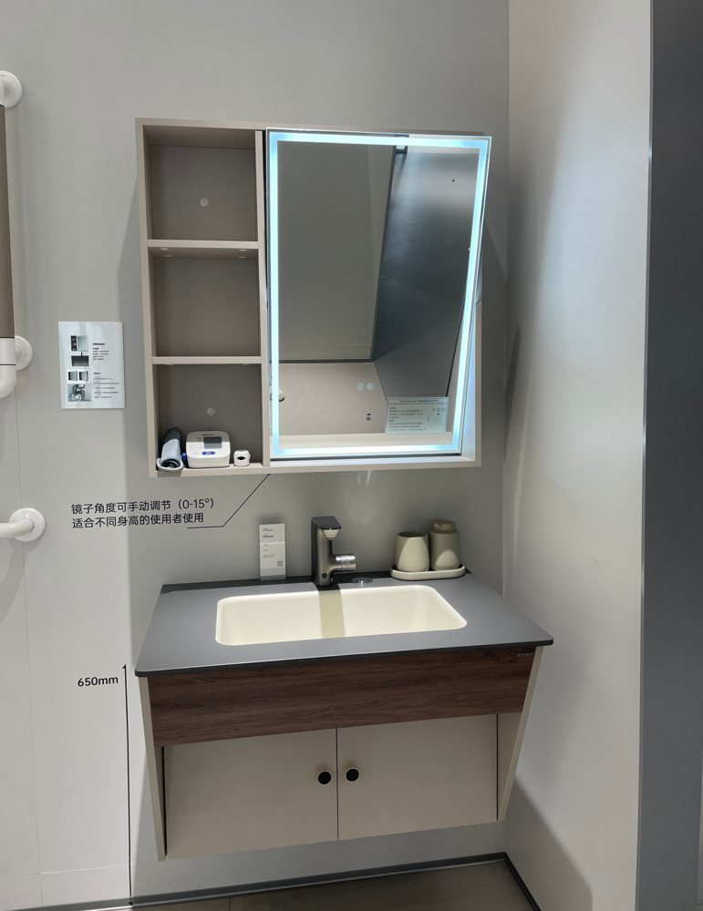

一句话了解沐岚
沐岚（MULAN）是佛山的适老化卫浴工厂，为经销商、OEM 品牌和养老机构提供坐式淋浴器、电动起身助力架和安全扶手等产品。
每款产品都让老年人和行动不便人士能够安全、独立地洗浴和如厕。沐岚已出口中东和西亚，目前重点拓展日本市场。价格按需提供 B2B 报价。
公开参数
- 135 kg起身助力架最大载荷
- 20,000助力架使用寿命（次）
- ≤9 L/min坐式淋浴器节水流量
- 250 kg折叠凳最大承重
沐岚 2025 适老化卫浴产品手册.
产品
八条产品线，组成一间适老化浴室。

整体空间适老化智能卫浴空间套餐
整间一次规划，每个部件都为老年人使用而选。
查看产品 →
洗浴多功能坐式淋浴器
自带座椅的独立淋浴设备，老人可以坐着洗澡。
查看产品 →
洗浴多功能分体式淋浴器
上下喷淋臂均可旋转，可选带顶喷或不带顶喷。
查看产品 →
如厕电动起身助力架
一键静音升降，随时悬停在需要的高度。
查看产品 → 洗浴
洗浴挂墙淋浴椅
柔软、可排水的挂墙座椅，折起后淋浴区空间更大。
查看产品 →
洗浴挂墙折叠凳
放下即可坐，翻起不占地。
查看产品 →
扶手支撑安全扶手系列
L 型扶手、马桶上翻扶手和洗脸台扶手，防滑握感。
查看产品 →
浴室柜智能浴室柜
轮椅可进入台盆下方，镜子按身高调节。
查看产品 →
买家为什么选择沐岚
专为老年人设计
卫浴品牌多在卖风格与舒适。沐岚只做为老年人和照护者设计的卫浴产品。
多功能坐式淋浴器 →一个供应商，整间浴室
淋浴、如厕助力、扶手、SOS 按钮和浴室柜出自同一工厂，养老机构每间浴室规格统一。
适老化智能卫浴空间套餐 →先看参数，再谈报价
每款产品公开承重、防护等级、使用寿命和用水量，买家询价前就能比较。
电动起身助力架 →
常见问题
沐岚生产哪些产品？
沐岚（佛山市沐岚智家建材有限公司）生产适老化卫浴产品：多功能坐式和分体式淋浴器、电动起身助力架、挂墙淋浴椅和折叠凳、安全扶手系列、轮椅可入的智能浴室柜，以及适老化智能卫浴空间套餐。
沐岚的产品适合谁？
产品面向希望安全、独立完成洗浴和如厕的老年人及行动不便人士。沐岚主要服务企业客户：经销商与进口商、OEM 品牌，以及为家庭、公寓或养老设施做配置的养老机构。
老人可以坐着洗澡吗？
可以。多功能坐式淋浴器自带座椅，可坐浴也可站浴。两侧淋浴臂共 8 个可调出水嘴，水雾包裹全身，并有肩部出水和后背按摩。节水流量不超过 9 升/分钟，最大承重 110 公斤。
电动起身助力架如何帮助如厕？
助力架安装在马桶上，一键静音升降座圈，无级调节、随时悬停。前沿抬升 130 + 45 mm，座板角度 0–13°。最大载荷 135 kg，防护等级 IPX4，使用寿命 20,000 次。
适老化智能卫浴空间套餐包含什么？
套餐规划整间卫浴，包括人体存在感应器、适老化温馨照明、智能浴霸、安全防滑扶手、SOS 紧急呼叫按钮、坐式淋浴器、智能马桶加升降辅助器，以及轮椅可入的智能浴室柜。
夜间能看清扶手吗？
沐岚夜光款扶手带夜光圈，吸收光源后可在黑暗中发光，夜间更容易找到。扶手表面有凸起防滑颗粒，一款 L 型扶手为 36 mm 树脂外管内置铝合金管。
沐岚提供 OEM 吗？
提供。沐岚为希望以自有品牌销售的客户提供适老化卫浴产品 OEM。请通过 WhatsApp 告知市场、产品和预计数量，洽谈规格和合作条件。
沐岚供应哪些市场？如何获取报价？
沐岚已出口中东和西亚，目前重点拓展日本市场。如需 B2B 报价、产品资料或 OEM 合作，请通过 WhatsApp +86 136 6003 9128 联系沐岚团队，并说明所需产品和数量。
最新文章
 居家浴室安全
居家浴室安全How to make a bathroom safe for elderly parents: a checklist
A practical checklist to make a bathroom safe for elderly parents: grab bars, shower seating, toilet support, night lighting and the order to do it in.
 居家浴室安全
居家浴室安全Seated shower vs shower chair: which suits older users?
Seated shower or shower chair for an elderly person? Compare installation, warmth, carer effort, space and fit, with a checklist for choosing.
 居家浴室安全
居家浴室安全Toilet lift assist for elderly users: what to check first
Who needs a toilet lift assist, how it compares with rails and raised seats, and nine things to check before buying for a home or care home.
- 居家浴室安全
Where to install grab bars in a bathroom: shapes and positions
Where to install grab bars in a bathroom: toilet, shower, basin and door positions, ADA heights, which shape goes where, and how to see them at night.
- 居家浴室安全
Winter bathroom safety for older people and heat shock
How to cut winter heat shock risk for older people: warm the bathroom, keep baths short and below 41°C, and add seating and grab bars.
- 养老项目
Care home bathroom design requirements: an 8-part spec
An 8-part specification for age-friendly care-home bathrooms: space, floors, showering, toilets, grab bars, vanity, warmth and call systems.